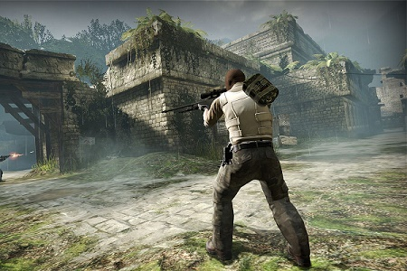

Counter-Strike: Global Offensive
Counter-Strike: Global Offensive is the newest iteration of one of the most iconicfirst person shooters of all time. It is a team based shooter known for its bomb defusal mode, where there are two teams: terrorist, and counter terrorist. The counter-terrorists defend two bomb sites, site A and site B, from the terrorists whose objective is first to attack the bomb site and plant the bomb. Then they defend the bomb site from the remaining CTs. When the bomb explodes, or the Ts manage to kill the CTs, then the terrorists win. If the CTs manage to kill the terrorists, and/or defuse the bomb, then they win. This is my favorite shooter of all time, and I would recommend it to anyone playing on the PC and looking for a good shooter. The playerbase is thriving, hundreds of thousands of players play it every day. It provides a hardcore, competitive experience for a cheap price.